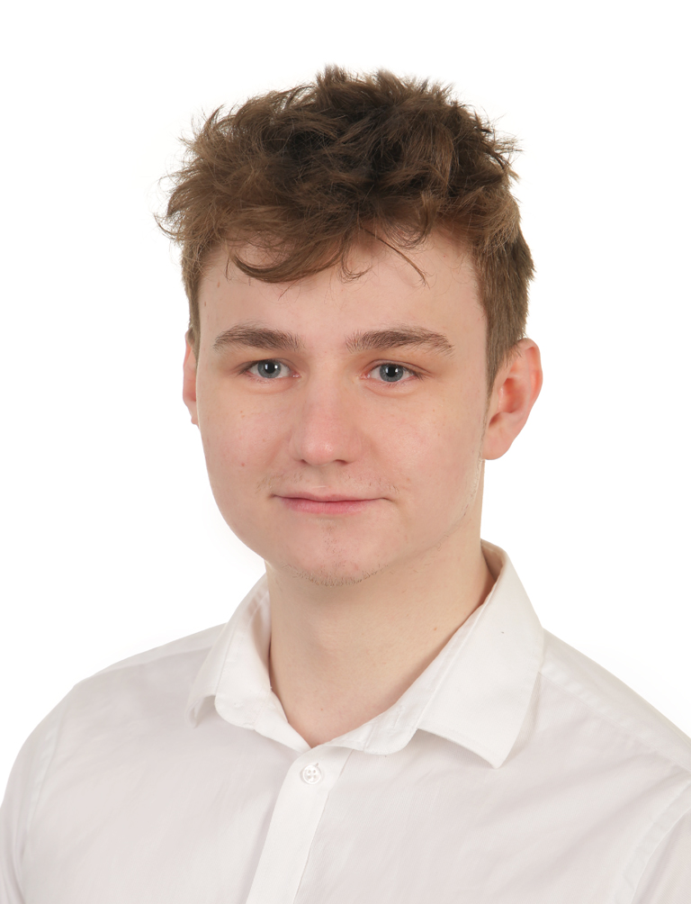

DevOps / SRE
DevOps engineer running an Azure platform at 7N — multi-tenant AKS, Bicep-driven infrastructure, KQL-driven observability. Five years in tech: first three breaking software as a QA, last two making sure it doesn't break.
Full Kubestronaut · AZ-500 · CompTIA Sec+
// console — query my career
// career.timeline
// stack
// whoami

Hi, for me, technology is not just a profession, but a genuine passion. I am committed to continuous growth, striving to become a better version of myself every single day. I constantly set ambitious goals that go beyond standard project scopes, which keeps me engaged and pushes me to consistently raise the bar. Outside of work, I am individual which enjoys bouldering, gym training, and running.
When I’m indoors, you’ll likely find me gaming or diving deep into new, emerging technologies. Recently I've been gettings hands on with electronics, learning to solder and create custom devices that fulfill my needs.